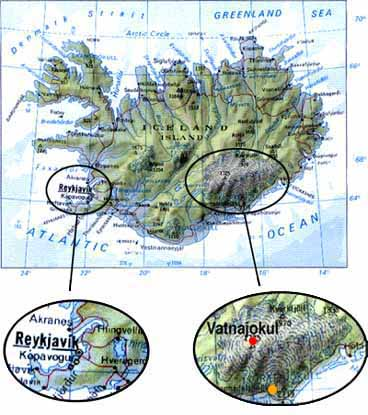

<html>
<!--this site was created by Jacqueline Davey and Kevin E. Ellis-->
<head>
<title>
thawed - no2
</title>
</head>

<body bgcolor="#ffffff" text="#000000" link="#0059ff" vlink="#ff5900"
alink="#bbbbbb">

<center>

<table cellpadding=0 cellspacing=0 width=460 border=0>
<tr>
<td>

<p><br><br>
</td>
</tr>
</table>


<table cellpadding=0 cellspacing=0 width=410 border=0>
<tr>
<td>

I am going to address something a lot of people have been asking us about, 
the volcano. First I will say that we are not able to see, or hear it.
There is no lava in the streets and Reykjavik is not covered in ashes.
<p>
As a matter of fact the volcano is approximately 400 km away and underneath 
the largest glacier in Europe, Vatnajokul (Vatna meaning water and jokul 
meaning glacier). Nevertheless it is an important topic here. It is 
on the news all the time. Below is a map of Iceland to give you an 
idea of where it is in relation to Reykjavik. As you can see it 
is almost on the opposite side of the country. 
<p><br>

<center>

</center>
<p><br>
<center>
<font color="#0082ff">The orange dot represents where we went <br>
for last week's featured outing, Skaftafell.
<br><br>
The red dot represents the site of the volcanic eruption.
</font>
</center>
<br><br>

Some scientists speculate that this eruption, larger 
than Mount St. Helens, may be one of the largest of the century. 
It is already larger than the famous volcano that erupted in 1973 
on the Westman Islands and actually created a new island. This 
volcano, originally thought to be 2 or 3 km across now estimated to be 
7 or 8 km across, has exploded up through the 
<a href="http://www.nyherji.is/lio/gos/lgos26.jpg">glacier</a> and 
built up a mountain underneath while feeding the lake that was 
already in existence. They anticipate major flooding either 
north or south of the glacier. They are not sure when or where 
this will take place but have been busy preparing for it.
For more in depth coverage check out 
<a href="http://www.cnn.com/TECH/9610/07/iceland.glacier.reut/index.html">
CNN's</a> reports.
<p><br><br>

</td>
</tr>
</table>

<table width=460 cellspacing=0 cellpadding=0 border=0>
<tr>
<td align=center width=76>
<a href="../thawed.html" onMouseOver="window.status='thawed splash screen'; return true">thawed</a>
</td>

<td align=center width=76>
<a href="telnet://194.144.235.67">chat</a>
</td>

<td align=center width=76>
<br>
<a href="specials.html" onMouseOver="window.status='specials'; return true"><font size=7><i>*</i></font></a>
</td>

<td align=center width=76>
<a href="mannequin.html" onMouseOver="window.status='see what joan has to say this week'; return true">dummytalk</a>
</td>

<td align=center width=76>
<a href="outings.html" onMouseOver="window.status='what we did this week'; return true">outings</a>
</td>

<td align=center width=76>
<a href="diffs.html" onMouseOver="window.status='the things that make Iceland different'; return true">the little things</a>
</td>
</tr>
</table>

</center>

</body>

</html>
